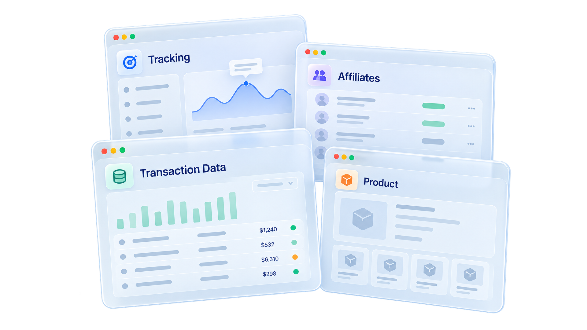
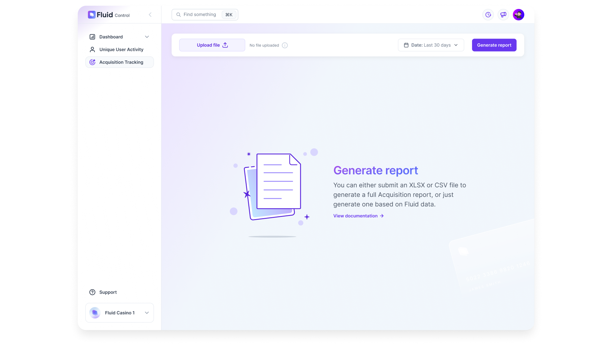
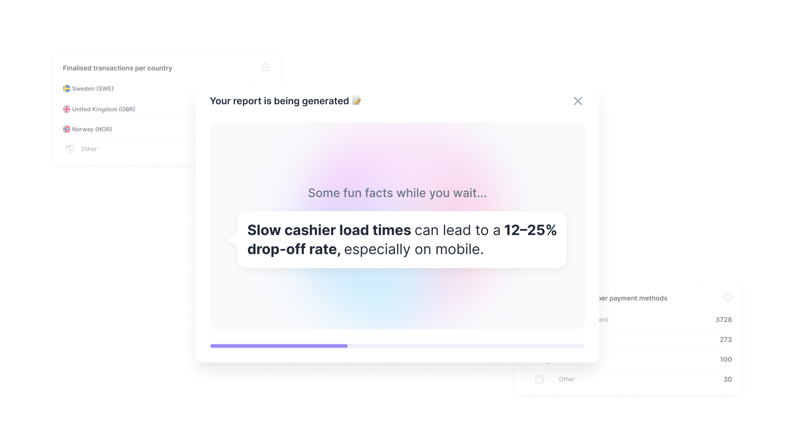
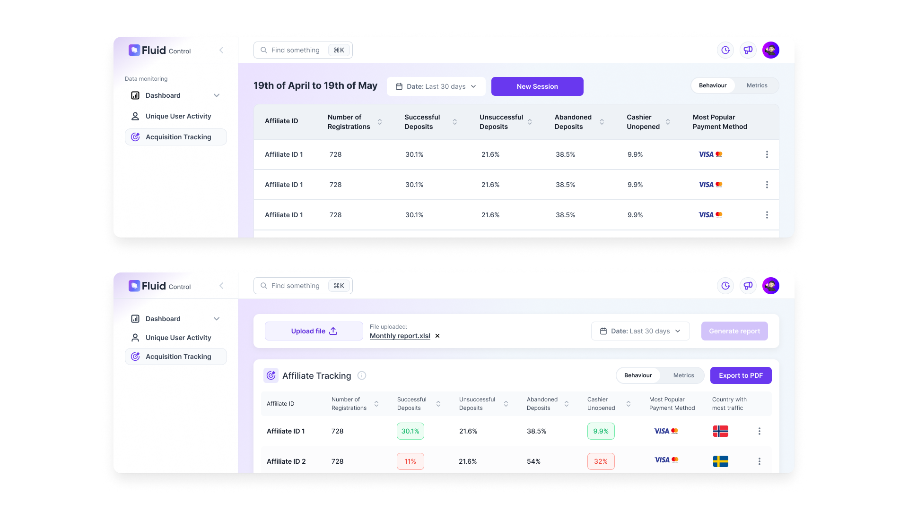
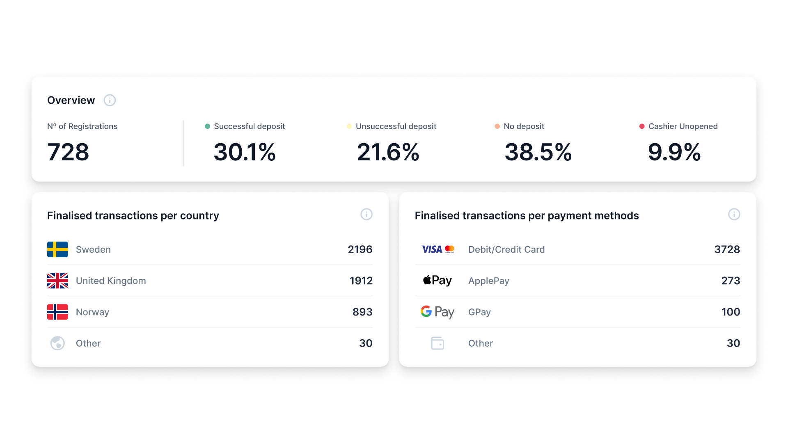
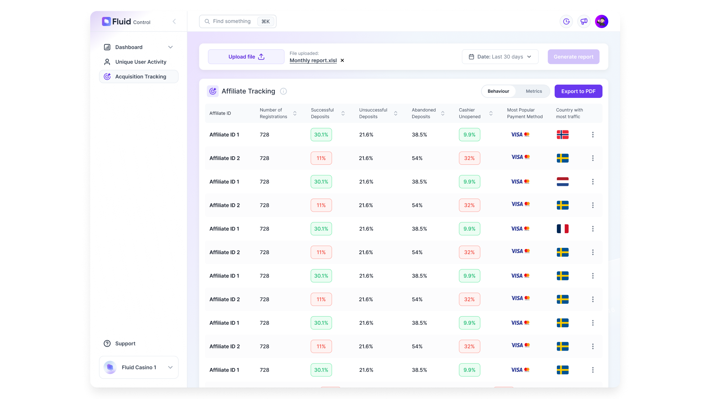
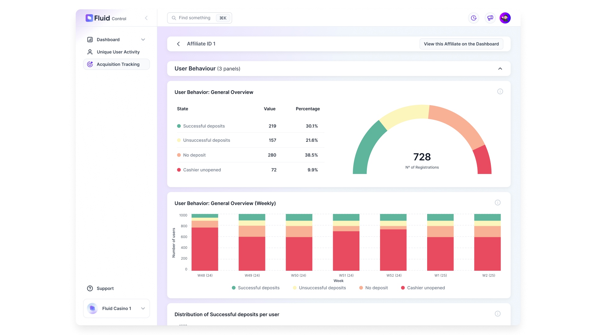
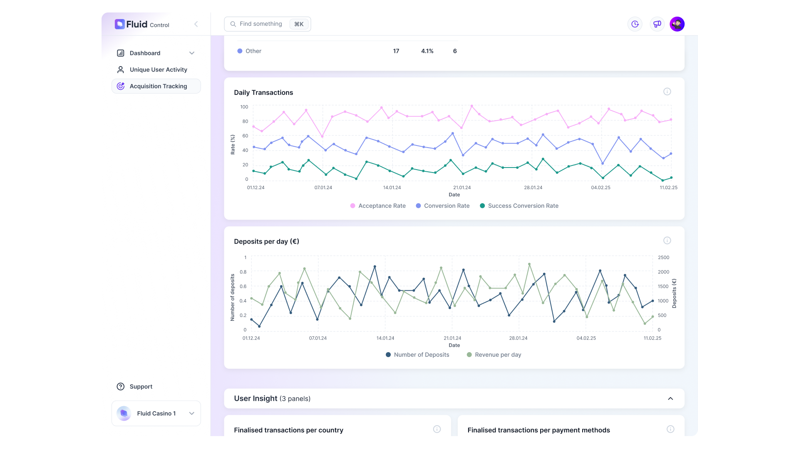

The starting point
By the end of Q2 2026, Fluid decided to bring one of its biggest ideas to life: the Acquisition Tracking tool. The idea came from real industry experience: how does affiliate traffic perform? Where can I track it? How can I know I'm paying for quality customers?
There hadn't been a shared source of truth for knowing when a potential customer came from an affiliate and when they actually converted into a paying consumer. And when there was, it typically involved multiple tools and an immense amount of time.
By enabling tracking even inside the cashier, Fluid could collect the necessary data and bring it all into one place: Fluid Control.

Overwhelming number of tools
Users and their decisions
The goal of building this product was to present the data in a way that anyone in the organisation could view and understand it. From marketing to product to major stakeholders, anyone should be able to quickly see which affiliates were worth the money spent—and which were not.
During user research with existing customers, this was an idea our clients didn't even know was possible. But once they did, it created a need that wasn't there before. Suddenly, customers didn't feel that reviewing such an important part of their business was a chore, but rather a quick glance that delivered valuable information.
Key insight: our customers didn't know that uniting these two crucial parts into one product was even possible, and recognised the need once we shared the idea with them.
Goals and success metrics
The goal for delivering this product has been the same as for every part of this product: make it user-first. The business goal was to provide insight into how affiliates perform, and the user goal was to use that data to gain clarity on the quality of traffic coming to their site.
Delivering a new way to gain data insight, while also giving customers the freedom and autonomy to work with the data, is a success in itself.

Homepage of the tool to get started
Defining what to show
When presented with the full range of data we could display, the goal was to provide the most relevant information at first glance. If users wanted to go deeper, they could dive in to identify issues or uncover additional context.
A table list of all affiliates—with the most important information upfront, such as the number of registrations made through that affiliate, how many of those registrations resulted in a successful deposit, and which ones didn't even try—was the primary approach for presenting this volume of data.
The other main goal was to communicate affiliate quality at a glance, without requiring users to dig into too many details. That's why the table list was split by a toggle that switched between "Behaviour" and "Metrics", each showing relevant information in its own sections.

Loading state while report is being generated
Design process and data visualisation decisions
Early wireframes and information architecture were created as soon as the possible data points were defined. Following the hierarchy and context, additional data was brought in to make the information complete.
Once the wireframes were in place, a user flow was mapped to show how users would reach the relevant information, what actions they needed to take, and how the experience could be as frictionless as possible.
Edge cases were identified, and initial iterations of the wireframes were amended to cover all possible scenarios. After that, the final design was developed and soon after shared with the team and later our customers.

Initial design vs final design
Testing and iteration
After the team and existing customers saw the demo in a prototype, minor feedback was incorporated into the design. For example:
- There was no way to view documentation with more information on the default page of this product → Adjustments were done.
- Data presented in each Affiliate's individual data page was confusing → regroup charts and rename accordingly.
Overall, clients were excited to see the connection between affiliate traffic and the payments journey in one place, and saw strong value in it.

Initial data layout that didn't correlate with the graphs, needed a layout shift
The final solution
A new table list view was created for this product, with alternating background colours to make each affiliate more visually distinct. We also introduced good/bad colour coding for percentages, cohesive colours across graphs, and links to other parts of the product.

Final design: table view

Final design: more details of the Affiliate

Final design: more details of the Affiliate
Collaboration and delivery
After completing the prototypes and getting the design signed off by the team, I created detailed user stories for each part of the product—from base functionality through different parts of the flow, including edge cases.
From there, I tested and signed off each ticket, addressed potential edge cases with developers, and amended the designs accordingly.
Impact
This new tool has saved our clients significant time. Instead of switching between products, they now have a single source of truth—one that goes further than other tools in the industry. By showing which affiliates bring in good traffic and which don't, we give clients a clear path for where they should (and shouldn't) invest money, directly impacting their business income.
Reflections and next steps
Personally, I find designing with data to be one of the best parts of being a product designer. Seeing direct impact, and knowing how and when to present information to customers, provides business insight that's critical—especially for understanding what's working well and what can be improved.